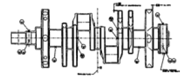
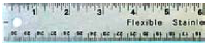
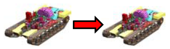
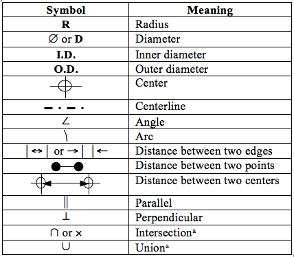

3. Measuring data
Unless a modeler is creating a conceptually new geometry, he must work from a variety of information sources to build a model. In some cases, blueprints or mechanical drawings exist. In others, a trip to the field is required to physically measure objects and orientations. In still others, geometry exists in another CAD format and needs to be converted to BRL-CAD format. As shown in Table 1, each type of measurement source has its own set of advantages and disadvantages, depending on the modeler’s and/or user’s point of view.
| Data Sources | Advantages | Disadvantages |
|---|---|---|
Blueprints/schematics/mechanical drawings/photographs

|
Can save time/resources by providing precise measurements with minimal data collection effort. Can also suggest ways to structure the model (e.g., by providing wiring diagrams, subsystem schematics, etc.). |
Can sometimes be difficult to read. Do not always show all needed measurements or views. Are not always consistent with the actual objects they represent (e.g., design changes sometimes occur during development or manufacturing). |
Measurable objects

|
Can arguably provide the best source of verifiable information by providing hands-on access to the actual objects being modeled. |
Can be resource and labor intensive and can be limited by the objects’ availability, accessibility, and measurability, resulting in missed measurements. |
Converted geometry

|
Can offer significant savings in data collection and/or measurement efforts. |
Can have missing data, unfamiliar naming schemes, and alternate/dissimilar geometry formats (e.g., feature-based objects, splines, etc.). Can also be unsuitable for a given application because the original model was developed for a different purpose. |
Regardless of the type information source used, there are several simple keys to obtaining data. These keys often require a little extra time and effort in the early stages of the modeling process, but they can save significantly more time and effort later on (especially if multiple modelers are involved in the project). Several of these keys are identified as follows:
-
Leverage all sources available: Although one of the previously mentioned sources may be the primary one from which a modeler will work, all available photographs, drawings, converted geometry, etc., should be used together to spot-check and verify the information given. Sometimes schematics are mislabeled, mistakes are made while measuring, or geometry from other CAD packages does not convert properly. The only way to catch some of these errors is to compare them against another source.
-
Get information while it is available: With the many data points involved in building complex geometry, it is not uncommon to find during geometry development that not all required information was obtained during the data measurement/collection phase. Important components and/or dimensions can be overlooked, and it may be inconvenient or impossible (e.g., with a combat vehicle) to recollect, remeasure, or reconvert what is missing. Thus, a modeler should be as thorough as possible when obtaining data. Even if it is not clear whether a piece of geometry or measurement will be required, it can always be discarded later if not needed. Also, in the spirit of the carpenter’s maxim, it is a good idea to "measure twice and cut once" and double-check measured or converted geometry before it is placed in a model.
-
Get total lengths and total views: Modelers sometimes take relative measurements of objects across a face without measuring the entire length/width of the face. Unfortunately, at the end, the measurements do not always add up. It is much easier to "back out" missed or inaccurate measurements given total lengths/widths. Likewise, when photographing portions of a bigger object (e.g., a radiator on a truck), it is a good idea to also capture several "bird’s eye" views of encompassing objects (e.g., the engine compartment or the entire truck) to help establish overall reference points.
For a series of uniformly spaced objects, it is good practice to measure the total length of the series and divide by the number of objects. This helps spread out any inaccuracies along the span and prevents them from accumulating at the last object. For example, in a row of 20 bolts at 50-mm intervals, a measurement error of just 2 mm between bolts could result in the last bolt being nearly 40 mm out of position.
-
Record measurements as clearly and consistently as possible: It is interesting how a "scribble" that is perfectly understandable to the measurement-taker who is still in front of the object can become indecipherable when it is later viewed back in the office (when the object is no longer accessible). Furthermore, despite the best laid plans, projects and personnel can change in midstream, and the person(s) taking measurements may wind up having little or no connection to the person(s) actually interpreting those measurements and building the model. Therefore, all drawings and notations should be sufficiently clear and consistent so that someone unfamiliar with the object could understand and work with the recorded measurements. A few recommendations are given as follows:
-
Include meaningful titles on drawings: Detailed drawings and data can be of little value if it is unclear what the overall geometry/view is and how the designated piece ties into the completed model.
-
In general, orient drawings in orthogonal views: This practice eliminates potential problems associated with perspective and makes drawings easier to read and use. If other angles are desired (and it is not a bad idea to include at least one off-angle view with a few measurements to help confirm reference points), be sure to include azimuth/elevation and information about the orientation relative to the eye point and to the actual vehicle coordinate system. In addition, note any atypical configurations and orientations (e.g., a tank turret rotated in an unusual fashion to allow access to certain components).
-
Include offsets from other objects: Although these measurements may not actually be primary data (i.e., required inputs for MGED commands), they may help the modeler resolve problems or derive other measurements needed later. For example, when modeling a field of objects on a flat surface (e.g., gauges and buttons on an instrument panel), it is good practice not only to collect the distances of the objects from, say, the edges of the panel but also the distances relative to other objects. This information can be valuable when trying to troubleshoot overlaps or other problems encountered during the evaluation phase.
-
Clearly record small details and symbols: When recording measurements, it is important to remember that even small details (such as arrows, edges, centers, thicknesses, numbers, and units) can lead to possible confusion. Arrows too long or too short can be mistaken for pointing to a shape’s edge instead of its center, hastily written numbers can be mistaken for other numbers (e.g., "1" vs. "7"), unidentified inner diameters can be confused with outer diameters, unidentified units can be assumed to be other units, etc. The table below lists some standard symbols and abbreviations that are commonly used when recording measurements.
Figure 1. Commonly used measurement symbols and abbreviations.
-